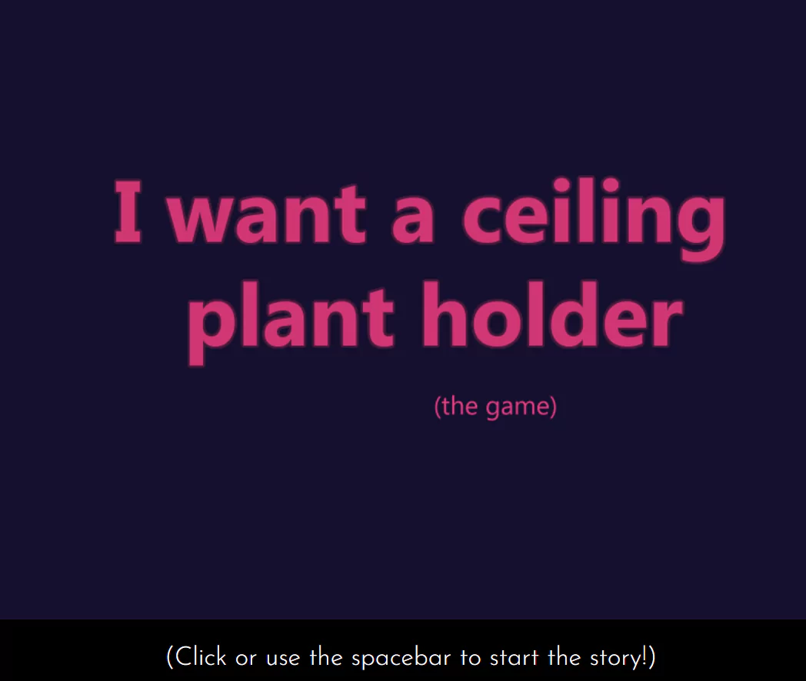

Click here to play the game!
What happens when you desperately want a ceiling plant holder but you
don't want to go outside to go get one? A point-and-click game about
searching it up on the Internet, of course!
FEATURES: